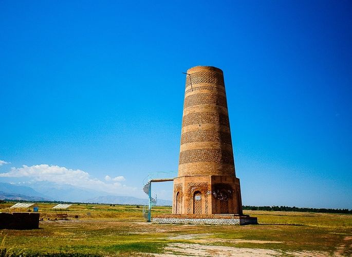
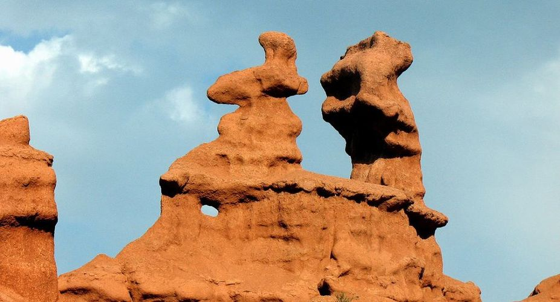
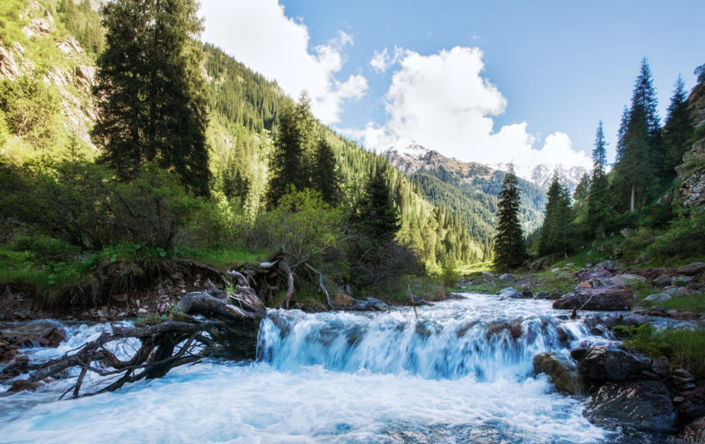
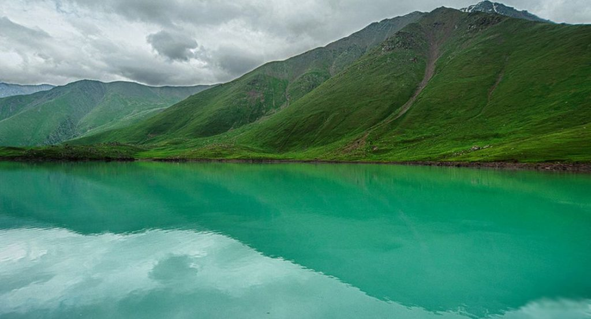

Природный парк расположен в сорока километрах от
Бишкека на высоте 1600-4800 метров. Название в переводе с кыргызского означает «пестрый
можжевельник» — в честь произрастающего здесь практически на каждом шагу растения.
Ущелье притягивает не только альпинистов, но и уфологов, считающих парк идеальным
местом,где можно наблюдать неопознанные летающие объекты.
Данный минарет — одно из первых строений в Средней Азии подобного типа. Первоначальная высота башни составляла 45 метров, а сейчас чуть больше 20 метров. Связана с этим одна красивая легенда.
У одного могущественного хана была прекрасная дочь по имени Монара. Старец предрек, что она умрет от укуса черного паука. Хан приказал построить высокую башню. Аксакала заточил внизу, а любимую дочь — под куполом. Ежедневно досматривали всех, кто приносил ей продукты. В шестнадцатый день рождения отец решил отнести Монаре в качестве подарка гроздь винограда. Только девушка приняла ее, как упала без чувств. Маленький черный паук прятался в ягодах. Охваченный горем отец рыдал так громко, что содрогалась башня. Купол не выдержал и упал.
Чтобы увидеть каньоны, не обязательно лететь через океан в Америку. В Кыргызстане есть свой Гранд-каньон, и находится он в Боомском ущелье.
Руины таинственного античного города — это творение природы. Ливни вымывали горную породу, ветра выдували песчаник, создавая неповторимые купола, колонны, пирамиды.
Изюминкой каньонов является потухший вулкан, возраст которого оценивается в 2,5–3 миллиона лет. Добраться до каньона можно только через лабиринты скал по руслу высохшей реки.
Кегеты — ущелье на северном склоне Кыргызского хребта, располагающееся в 70 километрах от Бишкека и 20 километрах от Токмока. Отличается от прочих ущельев на Кыргызском хребте необычайной шириной и простором и очень привлекательно для самых разных туристов: от «скайраннеров» или любителей неспешных прогулок до велотуристов. Будучи одним из самых протяженных ущельев на Кыргызском хребте (≈27 км), Кегеты может похвастаться очень разнообразным рельефом и большим количеством красивых мест. К таковым, безусловно, относится озеро Кель-Тор в правом притоке реки Кегеты, два водопада, лес из тян-шанской ели и высокогорный перевал Кегеты (≈ 4000м), через который можно перейти в долину реки Восточный Каракол. Отдельно стоит остановиться на Кегетинском водопаде, который очень любим туристами. Этот небольшой, но полноводный водопад примерно 30-метровой высоты, с прохладной и чистой водой — прекрасное место для отдыха или небольшого пикника.
Урочище Кель-Тор — это небольшое ответвление от ущелья Кегеты, которое примечательно красивейшим горным озером, находящимся на высоте 2700 метров. Озеро завального происхождения, не имеет прямого стока и уходит под землю, вырываясь из под земли несколькими километрами ниже. Большую часть года озеро находится в замерзшем состоянии, а летом вода не прогревается больше чем 5 градусов по Цельсию, потому для купания оно малопригодно. Кель-Тор примечателен потрясающим бирюзовым цветом озера, особенно красивое сочетание красок можно застать там именно летом. Длина пешеходного трека к озеру составляет 8 километров в одну сторону. Тропа видна четко, потому заблудиться будет довольно проблематично. Сама дорога крайне живописна: начинается она с довольно пологого и безлесого участка, постепенно уходя все выше и выше на лесистые склоны, а затем и на настоящие высокогорные альпийские луга. По дороге есть небольшой брод. Есть множество мест для стоянок или пикников. В трех километрах выше озера начинается зона морен и ледников. Также там располагается и несколько перевалов, по которым можно перейти в Шамсийский Туюк или ущелье Кегеты. Перевалы довольно сложны для прохождения, потому их посещение рекомендуется только подготовленным туристам.
